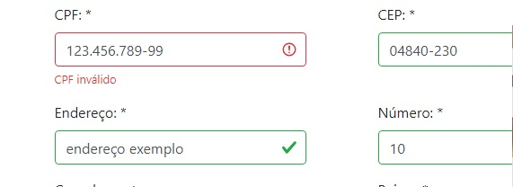
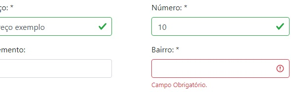

O desafio
Garantir a integridade dos dados enviados pelos usuários antes da persistência no banco de dados, tratando inconsistências e retornando feedback visual imediato na interface.
ASP.NET · C# · SQL Server · JavaScript
Aplicação web de gerenciamento e cadastro desenvolvida para consolidar arquitetura em camadas, validação estrita de dados e operações completas com SQL Server.
Ver no GitHub
Garantir a integridade dos dados enviados pelos usuários antes da persistência no banco de dados, tratando inconsistências e retornando feedback visual imediato na interface.
Aprofundamento prático no ecossistema .NET, ASP.NET Core, manipulação de queries no SQL Server, versionamento com Git e arquitetura de software orientada a dados.

